Chapter 10. 동적 프로그래밍(Dynamic Programming)¶
0절. 개요¶
n!(n의 팩토리얼 계산)¶
- n! = 1 × 2 × ··· × n
- n! = n(n - 1)!
=> 크기가 n인 문제는 크기가 하나 작은 문제 포함
그래프 최단 경로 계산¶
- 임의 그래프 두 정점 s, t간 최단 경로 계산
- s => t에 이르기 직전 방문하는 정점 : x
- s => x => t의 경로 계산
- s와 t 간 최단 경로는 s와 x 간 최단 경로 포함
1절. 재귀적 해법¶
재귀적 해법 사용¶
| 경우 | 예시 |
|---|---|
| 바람직한 경우 | 1. 퀵 정렬, 병합 정렬 등 정렬 알고리즘 2. 계승 계산(n!) 3. 그래프 DFS |
| 피하는 경우 | 1. 피보나치 수 계산 2. 행렬 곱셈 최적 순서 계산 |
재귀적 해법과 동적 프로그래밍¶
유사점¶
- 분할 정복적 사고
- 큰 문제를 작은 부분 문제로 분할 후 해결
- 적합한 문제 구조
- 중복 부분 문제
- 최적 부분 구조
차이점¶
- 중복 계산
- 메모리 사용
- Top-Down VS Bottom-Up
- Call Stack 사용 VS Stack 과부화 없음
2절. 동적 프로그래밍¶
재귀 함수 : 피보나치 수 계산¶
- 피보나치 수 계산 공식
- \(f(n)=f(n-1)+f(n-2)\)
- \(f(1)=f(2)=1\)
- ex) fib(7)을 재귀적으로 구현한 경우
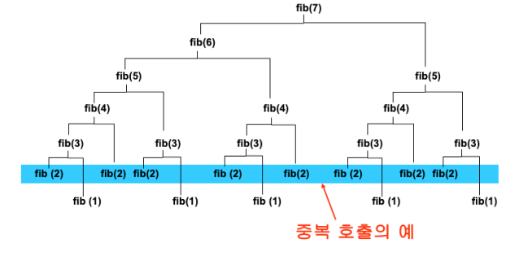
- fib() 문제 크기에 의한 fib(2) 중복 호출
| fib() | fib(2) 중복 호출 횟수 |
|---|---|
| fib(4) | 2 |
| fib(5) | 3 |
| fib(6) | 5 |
| fib(7) | 8 |
| fib(8) | 13 |
| fib(9) | 21 |
| fib(10) | 34 |
동적 프로그래밍 사용 조건¶
1. 최적 부분 구조(Optimal Substructure)¶
- 문제의 해답에 그보다 작은 문제의 해답이 포함된 경우
2. 중복 호출¶
- 재귀적 구현 시 중복 호출로 심각한 비효율이 발생한 경우
DP : 피보나치 수 계산¶
- DP 알고리즘의 피보나치 수
# 동적 프로그래밍 알고리즘 코드 구현
def fib(n):
if(n <= 0):
return 0
elif(n == 1 or n == 2):
return 1
f = [0] * (n + 1)
f[1] = 1
f[2] = 1
for i in range(3, n + 1):
f[i] = f[i - 1] + f[i - 2]
return f[n]
Memoization¶
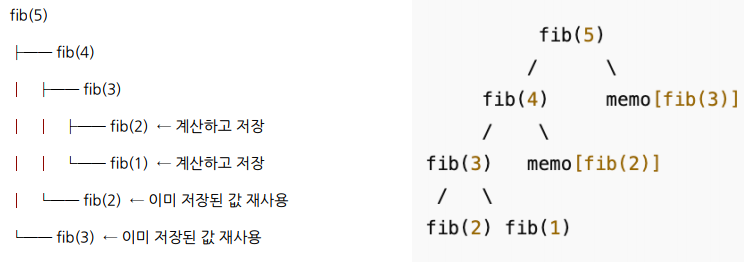
- Memo(메모, 쪽지) + ization(화) => 메모 기법
- Top-Down Code
- 이미 계산된 결과를 저장하고 재사용하는 기법
- 중복 계산 방지
- 같은 입력에 대해 한 번만 계산 후 저장
Tabulation¶
- Tab(le)(메모, 쪽지) + ulation(화) => 테이블 기법
- Bottom-Up Code
- 중복 재귀 호출을 피하는 방법
- 작은 문제 -> 큰 문제 순서로 해결하는 방법
- Loop를 통해 해결
- 테이블(배열) 생성을 통해 값 저장 후 진행
- 재귀 호출 미사용(Stack Overflow X)
- Memoization X
Memoization VS Tabulation¶
| 종류 | 구현 방식 |
저장 방식 |
호출 순서 |
사용 메모리 |
|---|---|---|---|---|
| Memoization | 재귀 호출 + 결과 저장 | Top-Down | 큰 문제부터 호출, 작은 문제로 내려감 | 적음(재귀 스택 사용) |
| Tabulation | 반복문으로 직접 계산 | Bottom-Up | 작은 문제부터 올라감 | 배열 전체 미리 할당 |
알고리즘 구현 비교 : Memoization VS Tabulation¶
- 일반적인 피보나치 함수
- Memoization : Top-Down 코드
def fib_memo(n, memo = {}):
# 입력받은 값이 memo 배열에 존재할 경우 바로 리턴
if n in memo:
return memo[n]
if n <= 1:
return n
memo[n] = fib(n - 1, memo) + fib(n - 2, memo)
return memo[n]
- Tabulation : Bottom-Up 코드
def fib_tab(n):
if n <= 1:
return n
# 맨 아래 배열부터 값 저장
dp = [0] * (n + 1)
dp[1] = 1
for i in range(2, n + 1):
dp[i] = dp[i - 1] + dp[i - 2]
return dp[n]
- 시간 복잡도는 모두 \(O(n)\)
3절. DP : 행렬 경로 문제¶
문제 설명¶
- 양수 원소로 구성된 n × n 행렬 존재
- 행렬의 좌상단 -> 우하단까지 이동
이동 방법(제약조건)¶
- 오른쪽 or 아래쪽으로만 이동 가능
- 왼쪽, 위쪽, 대각선 이동 비허용
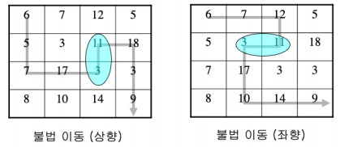
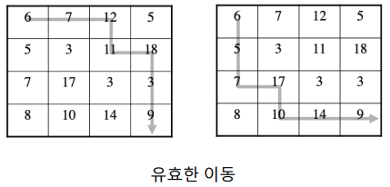
목표¶
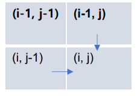
- 행렬 좌상단 -> 우하단 까지의 이동
- 방문한 칸의 수들을 더한 값이 최대화(or 최소화)
재귀 알고리즘¶
def moveMax(m, i, j):
if i == 0 or j == 0:
return 0
res = m[i][j] + max(moveMax(m, i - 1, j), moveMax(m, i, j - 1))
return res
- 중복 호출 발생 : DP로의 구현 가능
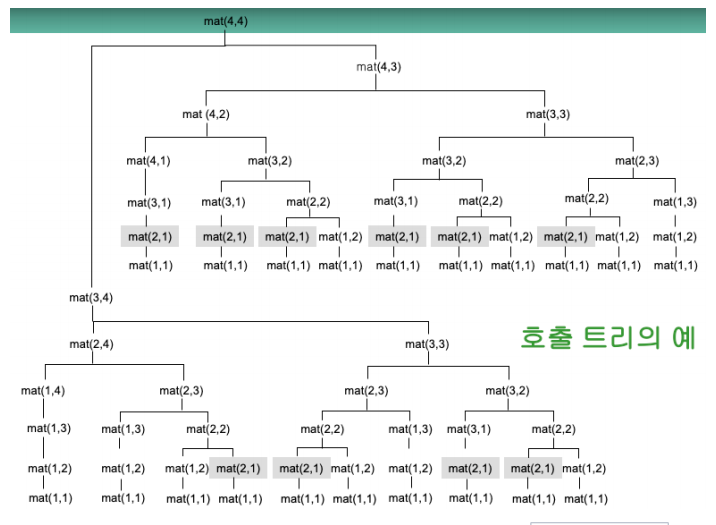
동적 프로그래밍 알고리즘¶
- 시간 복잡도
- \(Θ(n^2)\)
- 행렬 원소 수 \((n^2)\) 에 대한 선형시간
def moveMax(m, n):
# 딕셔너리에 (i, j) 값이 계산된 경우 바로 반환
c = [[0] * (n + 1) for i in range(n + 1)]
for a in range(n + 1):
c[a][0] = 0
for b in range(n + 1):
c[0][b] = 0
for i in range(1, n + 1):
for j in range(1, n + 1):
c[i][j] = m[i][j] + max(c[i - 1][j], c[i][j - 1])
return c[n][n]
응용 분야¶
- 로봇 경로 최적화(Robot Path Planning)
- 지도 기반 길찾기 (Pathfinding on Grids)
- 이미지 처리 및 컴퓨터 비전
- DNA 서열 정렬 (Sequence Alignment)
- 게임 인공지능 (Game AI Movement)
- 데이터 테이블 비교 및 변환 (Diff Tools)
4절. DP : 돌 놓기 문제¶
문제 설명¶
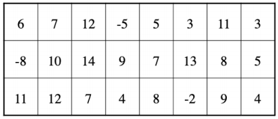
- 3 × n 테이블의 각 칸에 숫자를 제한 조건에 따라 처리
- 돌이 놓인 곳에 있는 수의 합을 최대(or 최소)로 하는 문제
제한 조건¶
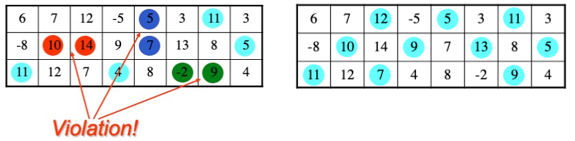
- 가로 or 세로의 인접 두 칸에 동시에 돌 놓기 불가
- 각 열에 적어도 하나 이상의 돌 필수
패턴 조건¶
패턴 1¶
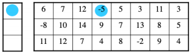
- 양립 가능 패턴
- 1 : 2 : 1
- 1 : 3 : 1
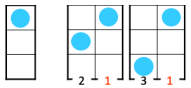
패턴 2¶
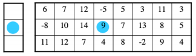
- 양립 가능 패턴
- 2 : 1 : 2
- 2 : 3 : 2
- 2 : 4 : 2
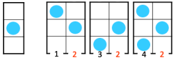
패턴 3¶
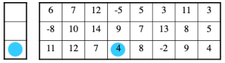
- 양립 가능 패턴
- 3 : 1 : 3
- 3 : 2 : 3
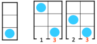
패턴 4¶
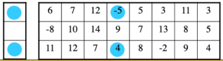
- 양립 가능 패턴
- 4 : 2 : 4
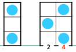
문제 해결 예시¶
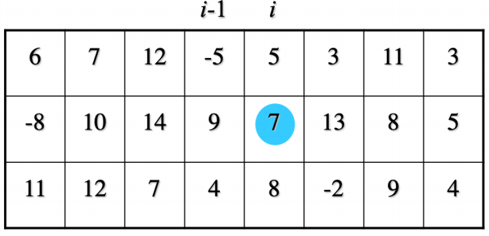
- i 열이 패턴 2로 놓여있는 경우의 최고점 계산
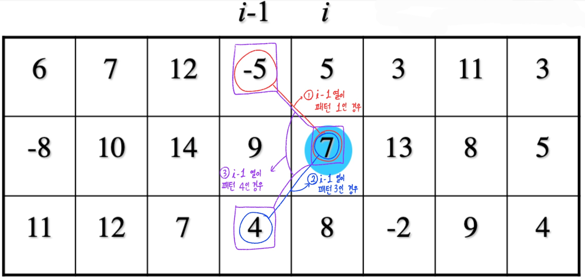
- 문제 해결 경우의 수 3가지
- (i - 1)열이 패턴 1인 경우
- (i - 1)열이 패턴 3인 경우
- (i - 1)열이 패턴 4인 경우
계산 방식¶
- \(c_{i2}\) : i 열이 패턴 2로 놓일 때의 최고점
- \(w_{i2}\) : i 열 패턴 2에 놓은 돌의 값
- \(c_{i2} = w_{i2} + max(c_{i-1, 1}, c_{i-1, 3}, c_{i-1, 4})\)
최종 목표¶
- 돌 놓기 문제에서 최종적으로 계산하는 값
- { \(c_{i1}, c_{i2}, c_{i3}, c_{i4}\) } 중 가장 큰 값
재귀적 관계¶
- \(c_{ip}\) 의 재귀적 관계
\[
c_{ip} = \begin{cases} w_{1p} & \text{if } i = 1 \\
\max_q{ c_{(i-1)q} } + w_{ip} & \text{if } i > 1 \end{cases}
\]
- 최적 부분 구조(Optimal Substructure)
- 자신보다 크기가 1 작은 문제의 최적해를 자신의 최적해 구성에 사용
재귀 알고리즘¶
def pebble(i, p, w, compare):
if i == 1:
return w[1][p]
else :
max_score = -math.inf
for q in range(1, 5):
if compare(q, p):
tmp = pebble(i - 1, q, w, compare)
if tmp > max_score:
max_score = tmp
return max_score + w[1][p]
def compare(q, p):
# 패턴 양립 가정 함수
return True
중복 호출 문제¶
- 재귀 알고리즘 구현 시 중복 호출 문제 발생
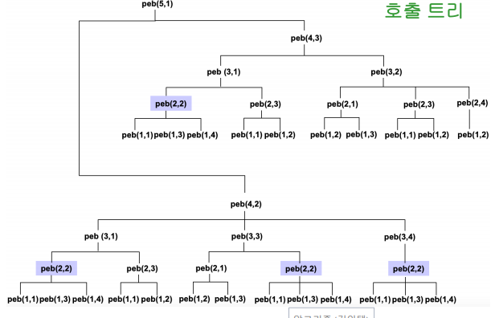
| 문제 크기(n) | 부분 문제 총 수 | 함수 호출 횟수 |
|---|---|---|
| 1 | 4 | 4 |
| 2 | 8 | 12 |
| 3 | 12 | 30 |
| 4 | 16 | 68 |
| 5 | 20 | 152 |
| 6 | 24 | 332 |
| 7 | 28 | 726 |
동적 프로그래밍 알고리즘¶
- 최적 부분 구조와 재귀적 구현 시 중복 호출 문제 발생
- 시간 복잡도
- \(Θ(n)\)
def pebble(n, w, compare):
peb = [[0] * 5 for _ in range(n + 1)]
for p in range(1, 5):
peb[1][p] = w[1][p]
for i in range(2, n + 1):
for p in range(1, 5):
max_score = -math.inf
for q in range(1, 5):
if compare(q, p):
if peb[i - 1][q] > max_score:
max_score = peb[i - 1][q]
if max_score == -math.inf:
peb[i][p] = -math.inf
else:
peb[i][p] = max_score + w[i][p]
lastMax = -math.inf
for a in range(1, 5):
if peb[n][a] > lastMax:
lastMax = peb[n][a]
return lastMax
def compare(q, p):
# 패턴 양립 가정 함수
return True
응용 분야¶
- 격자 형태의 그래프에서 인접하지 않은 노드들 중 최대 개수 선택
- WiFi 안테나 설치
- 센서 배치
- 자원 분산
- 논리 회로 배치 및 VLSI 설계
- 게임 이론 및 AI 전략 수립
- 작업 스케줄링 및 자원 할당
- 회의실 예약
- 학교 시간표
- CPU 스케줄링
5절. DP : 행렬 곱셈 순서 문제¶
문제 설명¶
-
행렬 A, B, C의 곱 계산
-
행렬 A(10 × 100)
- 행렬 B(100 × 5)
- 행렬 C(5 × 50)
문제 해결 예시 (1) : (AB)C¶
- 행렬 A (10 × 100)와 행렬 B (100 × 5)의 곱
- 10 × 100 × 5 = 5000번 곱셈
- ABC = (AB)C 로 계산한 경우
- 행렬 AB(10 × 5)와 행렬 C(5 × 50)의 곱
- 10 × 5 × 50 = 2500번 곱셈
- 5000 + 2500 = 7500 번 곱셈
문제 해결 예시 (2) : A(BC)¶
- 행렬 B (100×5)와 행렬 C (5×50)의 곱
- 100 × 5 × 50 = 25000번 곱셈
- ABC = A(BC) 로 계산한 경우
- 행렬 A(10 × 100)와 행렬 BC(100 × 50)의 곱
- 10 × 100 × 50 = 50000번 곱셈
- 50000 + 25000 = 75000 번 곱셈
해결 방법¶
- \(A_1, A_2, A_3, ..., A_n\) 계산 최적 순서 계산 필요
- 총 n - 1회의 행렬 곱셈을 어떤 순서로 할 것인가?
- n - 1개 경우의 수
- \(A_1(A_2 ··· A_n)\)
- \((A_1A_2)(A_3 ··· A_n)\)
- ···
- \((A_1···A_{n-2})(A_{n-1}A_n)\)
- \((A_1···A_{n-1})A_n\)
- \((A_1···A_{n-2})(A_{n-1}A_n)\) 는 i개 행렬 곱셈 문제 와 n - i개 행렬 곱셈 문제 를 포함
- \(C_{ij}\) : 행렬 곱 \(A_i···A_j\) 를 계산하는 최소 비용
\(C_{ij}\) 계산 최적 부분 구조¶
- \((A_i···A_k)(A_{k + 1}A_j)\)
\[
C_{ij} = \begin{cases} 0 & \text{if } i = j \\
\min_{i≤k≤j-1}\{C_{ik}+C_{k+1, j}+P_{i-1}P_k P_j\} & \text{if } i < j \end{cases}
\]
재귀 알고리즘¶
- 중복 호출 발생
- 시간 복잡도
- \(Ω(2^n)\)
def rMatrixChain(p, i, j):
if i == j:
return 0
# 무한대 초기화
minCost = float('inf')
# 분할 계산
for k in range(i, j):
cost = rMatrixChain(p, i, k) + rMatrixChain(p, k + 1, j) + p[i-1] * p[k] * p[j]
if cost < minCost:
minCost = cost
return minCost
동적 프로그래밍 알고리즘¶
- 시간 복잡도
- \(Θ(n^3)\)
def matrixChain(p):
# 행렬 개수
n = len(p) - 1
m = [[0] * (n + 1) for _ in range(n + 1)]
# 행렬이 하나인 경우 비용 0
for i in range(1, n + 1):
m[i][i] = 0
# 1부터 n-1까지
for r in range(1, n):
for i in range(1, n - r + 1):
# 부분 문제 끝 인덱스
j = i + r
m[i][j] = float('inf')
for k in range(i, j):
cost = m[i][k] + m[k + 1][j] + p[i - 1] * p[k] * p[j]
if cost < m[i][j]:
m[i][j] = cost
return m[1][n]
응용 분야¶
- 데이터 베이스 최적화
- SQL 질의에서 조인 연산 최적 순서 결정
- 컴파일러 최적화
- 수식의 괄호 묶는 방식 최적화
- 컴퓨터 그래픽스
- 변환 행렬 곱 연산 최적화
- 과학 계산
- 대형 행렬 연산 성능 최적화
6절. DP : 최장 공통 부분 순서 문제¶
문제 설명¶
- 두 문자열에 공통적으로 존재한 공통 부분 순서 중 가장 긴 문자열 탐색
예시¶
-
\<bcdb>
-
\<abcbdab>의 부분 순서
-
\<bca>
-
\<abcbdab>의 공통 부분 순서
-
\<bdcaba>의 공통 부분 순서
-
최장 공통 부분순서
- 공통 부분 순서 중 가장 긴 것
- ex) \<abcbdab>와 \<bdcaba>의 최장 공통 부분 순서(LCS)는 \<bcba>
최적 부분 구조(Optimal Substructure)¶
-
최장 공통 부분순서(LCS) 문제에 존재
-
두 문자열
- \(X_m=<x_1 x_2 .... x_m>\)
- \(Y_n=<y_1 y_2 .... y_n>\)
\(x_m = y_n\) : ①¶
- \(X_m\), \(Y_n\)의 LCS의 길이
- \(X_{m-1}\), \(Y_{n-1}\) 의 LCS 길이 + 1
\(x_m ≠ y_n\) : ②¶
- \(X_m\), \(Y_n\)의 LCS의 길이
- max(\(X_{m}\)와 \(Y_{n-1}\) 의 LCS 길이, \(X_{m-1}\)와 \(Y_{n}\) 의 LCS 길이)
점화식 : ① + ②¶
- \(C_{ij}\) : 두 문자열 \(X_i=<x_1 x_2 .... x_i>\) 와 \(Y_j=<y_1 y_2 .... y_j>\) 의 LCS 길이
\[
C_{ij} =
\begin{cases}
0 \\
C_{(i-1)(j-1)} + 1 & \text{if } x_i = y_j \\
\max(C_{i(j-1)}, C_{(i-1)j}) & \text{if } x_i ≠ y_j
\end{cases}
\]
재귀 알고리즘¶
def LCS(X, Y, m, n):
if m == 0 or n == 0:
return 0
elif X[m-1] == Y[n-1]:
return LCS(X, Y, m - 1, n - 1) + 1
else:
return max(LCS(X, Y, m - 1, n), LCS(X, Y, m, n - 1))
중복 호출 문제 발생¶
- 호출 트리에서의 문제 발생 : LCS(1, 1) 중복 횟수 = 9회
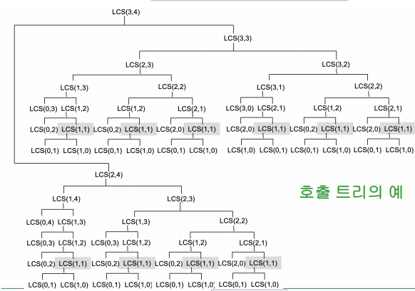
동적 프로그래밍 알고리즘¶
def LCS(X, Y):
m = len(X) # X 길이
n = len(Y) # Y 길이
C = [[0] * (n + 1) for _ in range(m + 1)]
for i in range(1, m + 1):
for j in range(1, n + 1):
if X[i - 1] == Y[j - 1]:
C[i][j] = C[i - 1][j - 1] + 1
else:
C[i][j] = max(C[i - 1][j], C[i][j - 1])
return C[m][n]
응용 분야¶
- 유전자 서열 분석
- 자연어 처리: 텍스트 유사도 측정
- 최소 편집 거리 알고리즘의 구성
- 데이터 중복 제거 및 동기화
- 데이터 스트리밍 분석
- 파일/문서 비교 및 버전 관리
7절. 응용 문제¶
모든 문제는 "동적 프로그래밍(계획법)"을 사용한다.
문제 1 : 도미노 채우기¶
- 도미노 채우기 문제
- 도미노 크기
- 1 x 2 직사각형
-
채울 사각형
-
가로 길이 : n
-
세로 길이 : 2
-
(1) 최적 부분 구조 ?
- (2) 이를 실현하는 알고리즘 ?
문제 2 : 이진 검색 트리 생성기¶
- \(1, 2, 3, … n\) 으로 생성된 이진 검색 트리의 총 갯수를 세는 동적 프로그래밍 알고리즘 ?
- \(C_k\) : \(1, 2, 3,.. k\) 로 만들 수 있는 이진 검색 트리의 총 수
- \(C_n\)
- 힌트: \(C_1 = 1, C_2 = 2, C_3 = 5\) 이며 \(C_4\)를 구하는데 있어 \(C_1, C_2, C_3\) 를 활용해라.
문제 3 : 배낭 문제¶
- 배낭이 총 5kg의 최대 무게를 갖는다고 가정하자.
- 물건 리스트
| 물건 | kg | 가치($) |
|---|---|---|
| A | 2 kg | $ 12 |
| B | 1 kg | $ 10 |
| C | 3 kg | $ 20 |
| D | 2 kg | $ 15 |
- (1) 물건을 넣는 총 경우의 수 ?
- (2) 가치가 최대가 되는 경우 ?